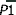

Glacier ice (1h)

Water has many solid phases (ices), given with their properties below.
 Phase diagram
Phase diagram
 Ice crystal data
Ice crystal data
 Known ices
Known ices
 Computer ices (ice 0, ice χ)
Computer ices (ice 0, ice χ)
 Vonnegut's ice-nine
Vonnegut's ice-nine
 The 'ice-rules' and ice crystal imperfections
The 'ice-rules' and ice crystal imperfections
The typical tetrahedral arrangement of hydrogen bonds
There are twenty or so three-dimensional crystalline phases [3500] (where the oxygen atoms are in fixed positions relative to each other, but the hydrogen atoms may or may not be disordered, and three amorphous (non-crystalline) phases (see [2145, 2349] for recent reviews of ice research). This large number is due to the open tetrahedrally arranged water molecular structure of hexagonal ice under normal atmospheric pressure and the large number of possible crystal structures that this ice can form as it is progressively crushed under high pressure.
All the crystalline phases of ice involve hydrogen-bonding water molecules with four neighboring water molecules (see left, and [1300] for a recent review). In most cases, the two hydrogen atoms are equivalent with hydrogen bonds of similar strength. The water molecules retain their symmetry obey the 'ice rules' j. For the most part, the ordering of the protons (in fixed positions with lower entropy) occurs at lower temperatures. In contrast, the pressure reduces the distances between second shell neighbors (lower volume and greater van der Waals effects). The H-O-H angle in the ice phases is expected to be a little less than tetrahedral (109.47°), at about 107°. The Clausius Clapeyron equation n for many ice phase changes has to be adapted due to water's negative expansion coefficient and anomalous change in entropy with volume [1147c].
Ice polymorph |
Density, |
Protons f | Crystal h | Symmetry | Dielectric constant, εS i | Notes | ||
|---|---|---|---|---|---|---|---|---|
| Ih, Hexagonal ice | 0.92 |
0.926 | disordered | Hexagonal | P63/mmc | one C6 | 97.5 | |
| Ic, Cubic ice | 0.93 q |
0.933 | disordered | Cubic | four C3 | |||
Isd, Stacking dis-ordered ice |
0.93 |
0.933 | disordered | Trigonal | P3m1 | one C3 | ||
| LDA, Ia b | 0.925 q |
disordered | Non-crystalline | As prepared, may be mixtures of several types | ||||
| HDA c | 1.17 |
disordered | Non-crystalline | As prepared, may be mixtures of several types | ||||
| VHDA d | 1.25 |
disordered | Non-crystalline | |||||
| II, Ice-two | 1.17 |
1.195 | ordered | Rhombohedral | one C3 | 3.66 | ||
| III, Ice-three | 1.14 |
1.160 | disordered | Tetragonal | P41212 | one C4 | 117 | protons may be partially ordered |
| IV, Ice-four | 1.27 |
1.275 | disordered | Rhombohedral | one C3 | metastable in ice V phase space, an interpenetrating ice frameworks | ||
| V, Ice-five | 1.23 |
1.233 | disordered | Monoclinic | C2/c | one C2 | 144 | protons may be partially ordered |
| VI, Ice-six | 1.31 |
1.314 | disordered | Tetragonal e | P42/nmc | one C4 | 193 | two interpenetrating frameworks |
| VII, Ice-seven | 1.50 |
1.591 | disordered | Cubic e | four C3 | 150 | two interpenetrating ice Ic frameworks | |
| VIII, Ice-eight | 1.46 |
1.885 | ordered | Tetragonal e | I41/amd | one C4 | 4 | low-temperature form of ice VII |
| IX, Ice-nine | 1.16 |
1.160 | ordered | Tetragonal | P41212 | one C4 | 3.74 | low-temperature form of ice III, metastable in ice II space |
| X, Ice-ten | 2.51 |
2.785 | symmetric | Cubic e | four C3 | symmetric proton form of ice VII | ||
| XI, Ice-eleven | 0.92 |
0.930 | ordered | Orthorhombic | Cmc21 | three C2 | ~4 | ordered form of ice Ih phase (needs OH−) |
| XI, Ice-eleven k | >2.51 |
symmetric | Orthorhombic e | PBcm | distorted | Superionic | ||
| Metallic [1818] k |
|
≈ 12 o | symmetric, O-H-O bent |
Monoclinic e | C2∕m | Superionic | ||
| XII, Ice-twelve | 1.29 |
1.301 | disordered | Tetragonal | one C4 | metastable in ice V phase space | ||
| XIII, Ice-thirteen | 1.23 |
1.247 | ordered | Monoclinic | P21/a | one C2 | ~4 | ordered form of ice V phase (needs H+) |
| XIV, Ice-fourteen | 1.29 |
1.294 | mostly ordered | Orthorhombic | P212121 | one C4 | ordered form of ice XII phase (needs H+) | |
| XV, Ice-fifteen | 1.30 |
1.328 | ordered | Pseudo-orthorhombic |  | one C4 | ~4 | ordered form of ice VI phase (needs H+) |
| XVI, Ice-sixteen | 0.81 |
disordered | Cubic | Fd3m | empty SII clathrate | |||
| Empty clathrate SIII r | 0.59 |
disordered | Cubic | three C4 | empty SIII clathrate | |||
| XVII, Ice-seventeen |
|
0.85 | disordered | Hexagonal | P6122 | one C6 | empty, was H2-filled ice | |
| XVIII, Ice-eighteen | 1.25 [4362] |
fluid | Cubic | Fm3m | four C3 three C4 |
Superionic; fcc oxygens |
||
| XIX, Ice-nineteen [3987] | ~1.32 |
~1.33 | ordered | Tetragonal | one C4 |
~4 | ordered form of ice VI phase (needs H+) |
|
XX Ice-twenty [4362] (also called Ice-nineteen [4057]) |
1.25
|
fluid | Cubic | six C2 four C3 three C4 |
Superionic; bcc oxygens |
|||
Ice Ih may be metastable with respect to empty clathrate structures (Ice-sixteen, [2252 and Ice-seventeen [2796]]) of lower density under negative pressure conditions (that is, stretched) at very low temperatures [520]. Different research groups have described two different forms of ice-eleven; (a) the high-pressure form (also known as ice-thirteen) involves hydrogen atoms equally-spaced between the oxygen atoms [84] (like ice-ten) in a distorted hexagonal close-packed structure whereas (b) the lower pressure, low temperature, form uses the incorporation of hydroxide defect doping (and interstitial K+ ions) to order the hydrogen-bonding of ice Ih [207], that otherwise occurs too slowly. Another ice-ten has been described, being the proton-ordered form of ice-six (VI); this is now known as ice fifteen. Only hexagonal ice-one (Ih), ice-three (III), ice-five (V), ice-six (VI), ice-seven (VII), and, perhaps, ice-ten (X) can be in equilibrium with liquid water (ice-ten with supercritical water), whereas all the others ices, including ice-two (II, [273]), are not stable in its presence under any conditions of temperature and pressure. The low-temperature ices, ice-two, ice-eight (VIII), ice-nine (IX), ice-eleven (low-pressure form), ice-thirteen (XIII) [1002], ice-fourteen (XIV) [1002], ice fifteen (XV) [1582], and one of the proposed ice nineteens (XIX) [3987] all possess (ice-nine and ice-fourteen incompletely) low entropy ordered hydrogen-bonding. In contrast, the other ices (except ice-ten [80] and ice-eleven where the hydrogen atoms are symmetrically placed and molecules of H2O do not have individual existence) the hydrogen-bonding is disordered even down to 0 K, where reachable; these include all the ices that share a phase boundary with liquid water. Their zero-point energies have been described [3780]. Disordered hydrogen bonding causes positional disorder in the oxygen atoms of several picometers around their crystallographic sites. Also, the disordered ices I, IV, V, VI, and XII, show glass transitions at low temperatures [2601], associated with the unfreezing of the reorientation dynamics. Ice-four (IV) and ice-twelve (XII) [82] are both metastable within the ice-five phase space. Cubic ice (Ic) is metastable with respect to hexagonal ice (Ih). Ice-seven (VII) undergoes X-ray-induced (≈ 9.7 keV) dissociation to an O2 - H2 alloy g at high pressure (>2.5 GPa) but reverts to ice-seven near its melting point at 700 K and 15 GPa [1383]. A new ice phase has been reported to lie on what had been thought to be the liquid (supercritical) side of ice-seven at high pressures, with approximate triple points of about 700 K, 20 GPa with liquid (supercritical) water and ice-seven and about 1500 K, 40 GPa with liquid (supercritical) and ice-ten [1521]. This may be a plastic phase where only molecular rotations are allowed [2078].
Ice polymorph |
Molecular
environments |
Small
ring size(s)p |
Helix |
Approximate O-O-O angles, ° |
Nets | Ring
penetration hole size |
|---|---|---|---|---|---|---|
| Ih, Hexagonal ice | 1 |
6 |
None |
All 109.47±0.16 |
lon | None |
| Ic, Cubic ice | 1 |
6 |
None |
109.47 |
dia | None |
| Isd, Stacking dis-ordered ice | 1 |
6 |
None |
109.47 |
None |
|
| LDA, Ia b | 3+ |
5(9), 6(55) |
None |
mainly
108, 109 and 111 |
None |
|
| HDA c | 6+ |
5(9), 6(55) |
None |
broad
range |
None |
|
| VHDA d | 6+ |
5(9), 6(55) |
None |
broad
range |
None [747] |
|
| II, Ice-two | 2 (1:1) |
6(7), 8(9),10(15) |
None |
80,100,107,118,124,128; 86,87,114,116,128,130 |
ict | None |
| III, Ice-three | 2 (1:2) |
5(1), 7(1), 8(1) |
4—fold |
(1) 91,95,112,112,125,125 (2) 98,98,102,106,114,135 |
kea | None |
| IV, Ice-four | 2 (1:3) |
6(7), 8(18),10(42) |
None |
(1) 92,92,92,124,124,124 (3) 88,90,113,119,123,128 |
icf single | some 6 |
| V, Ice-five | 4 (1:2:2:2) |
4(2), 5(3),
6(2), 8(3),9(2),10(12),12(1) |
None |
(1) 82,82,102,131,131,131 (2) 88,91,109,114,118,128 (3) 85,91,101,103,130,135 (4) 84,93,95,123,125,126 |
icv | 8 (1 bond) |
| VI, Ice-six | 2 (1:4) |
4(5), 8(9) |
None |
(1) 77,77,128,128,128,128 (2) 78,89,89,128,128,128 |
edi 2-fold | 8 (2 bonds) |
| VII, Ice-seven | 1 |
6 |
None |
109.47 |
dia 2-fold | every
6 |
| VIII, Ice-eight | 1 |
6 |
None |
109.47 |
dia 2-fold | every
6 |
| IX, Ice-nine | 2 (1:2) |
5(1), 7(1), 8(1) |
4—fold |
(1) 91,95,112,112,125,125 (2) 98,98,102,106,114,135 |
kea | None |
| X, Ice-ten | 1 |
6 |
None |
109.47 |
dia 2-fold | every
6 |
| XI, Ice-eleven | 1 |
6 |
None |
109.47 |
lon single | None |
| XI, Ice-eleven k | undetermined |
6/4 |
None |
undetermined |
every
6 |
|
| XII, Ice-twelve | 2 (1:2) |
7(2), 8(3) |
5—fold |
(1) 107,107,107,107,115,115 (2) 67,83,93,106,117,132 |
None |
|
| XIII, Ice-thirteen | 7 (all equal) |
4(2), 5(3),
6(2), 8(3),9(2),10(12),12(1) |
None |
(1) 82,82,102,131,131,131 (2) 88,91,109,114,118,128 (3) 85,91,101,103,130,135 (4) 84,93,95,123,125,126 |
icv | 8 (1 bond) |
| XIV, Ice-fourteen | 2 (1:2) |
7(2), 8(3) |
5—fold |
(1) 107,107,107,107,115,115 (2) 67,83,93,106,117,132 |
itv | None |
| XV, Ice-fifteen | 2 (1:4) |
4(5), 8(9) |
None |
(1) 77,77,122,122,134,134 (2) 87,90,94,124,129,135 |
edi 2-fold | 8 (2 bonds) |
| XVI, Ice-sixteen | 4 (6:6:4:1) |
5(9), 6(1) |
None |
106, 108, 109, 120 |
mtn | None |
| Empty SIII clathrate r | 2 (1:3) |
4(12), 6(8), 8(6) |
None |
90, 120, 135 |
None |
|
| XVII, Ice-seventeen | 1 |
5 |
6-fold |
103, 106, 111, 125 |
unj | None |
| XVIII, Ice-eighteen | 2 |
n/a |
n/a |
90, 180 |
n/a |
|
| XIX, Ice-nineteen | 4(5), 8(9) | None | 8 (2 bonds) | |||
| XX, Ice-twenty | 1 | n/a | n/a | 45, 90 | n/a |
n/a = not applicable
The thermal conductivities properties of crystalline and amorphous ices have been reviewed [1202]. The OD/OH Raman stretch bands for D2O/H2O ices have been analyzed and compared [3508]. The vibrational amplitudes and the degree of the phonon localization in nineteen ice forms, both crystalline and amorphous, have been determined by a quasi-harmonic approximation with a classical intermolecular interaction model for water [3783b]. The amplitude in the low-pressure ices increased with compression, while the opposite trend was observed in the medium and high-pressure ices. The mean square displacements of the ices' oxygen and hydrogen atoms were determined against temperature for ice Ih (O 0.107 ˣ Å−2; H 0.129 ˣ Å−2 at 200 K), LDA (O 0.105 ˣ Å−2; H 0.129 ˣ Å−2 at 200 K), and HDA at 100 MPa (H 0.131 ˣ Å−2 at 200 K), ice III at 300 MPa (O 0.095 ˣ Å−2; H 0.130 ˣ Å−2 at 200 K), VI at 1 GPa (O 0.054 ˣ Å−2; H 0.083 ˣ Å−2 at 200 K), and ice VII at 7 GPa (O 0.032 ˣ Å−2; H 0.058 ˣ Å−2 at 200 K) by a quasi-harmonic approximation method [3783b].
The near-infrared spectra of high-density crystalline H2O ices, ice-two, ice-four, ice-five, ice-six, ice-nine, and ice-twelve, have been compared with hexagonal ice [4189]. The first overtone of the OH-stretching mode, at about 6700 cm−1, was identified as the marker band most suitable to distinguish between these ices. There was a clear blue shift of this band that increased with increasing topological density and a significant narrowing of the band.
Other stable or metastable phases of ice have been proposed (for example, Ice XIII and ice XIV were proposed earlier than their discovery [958]), but their structures were not established. Several new phases (for example, ice i, 'Hexagonal Bilayer Water' and 'Pleated Sheet Water', [1985]) have only been found (so far) in modeling studies. However, other ices have been found at confined surfaces. 'Metallic' water,m where electrons are freed to move extensively throughout the material and the atoms of water exist as ions, probably exists as an antifluorite type structure m above 1.76 TPa [1138]. It is not thought that any other phases are stable at higher pressures than this. A highly conductive warm dense state of water (similar to liquid metal), observed with ultrafast pump-probe free-electron-lasers, has measured the brief reflection and transmission of ultrathin water sheet samples that approach a highly conducting state at electron temperatures exceeding 20,000 K [4332].
The proposed topology of the transformations between ice XI  ice II
ice II ice IX, and ice VIII
ice IX, and ice VIII  ice X has been described [1237]. The mechanism of ice crystal formation has been investigated by molecular dynamics by overcoming its timescale limitation. It was suggested that the formation of each ice crystal occurred via high-density water with a similar structure to the formed ice crystal [3908]. [Back to Top
ice X has been described [1237]. The mechanism of ice crystal formation has been investigated by molecular dynamics by overcoming its timescale limitation. It was suggested that the formation of each ice crystal occurred via high-density water with a similar structure to the formed ice crystal [3908]. [Back to Top  ]
]
Many other possible crystalline structures of solid water (ice) fit with the tetrahedrality of water's hydrogen bonding, and obey the ice rules [4046]. Nearly 75,000 putative ice structures have been generated using known silica structures, including all known ice structures except ice IV [4037]. These 'metastable' states may be generated using molecular models but whether they are important in the real world needs to be determined by experiment. One such ice is ice 0 (see below), a tetragonal structure (unit cell 12 molecules; 90º, 90º, 90º, 5.93 Å, 5.93 Å, 10.74 Å; 0.95 g ˣ cm−3) containing 5-, 6-, and 7-membered rings that have been proposed as a structure formed during the crystallization of ice Ic and ice Ih from supercooled water [2149]. Interestingly this ice 0 structure contains partial dodecahedral clusters consisting of three linked pentamers (H2O)11 as thought to exist in supercooled water and ES.
Ice 0 [2149]; 3 x 3 x3 unit cells viewed down the x- and z-axes. The view down the y-axis is similar to that down the x-axis
In these diagrams of ice 0, the hydrogen bonding is shown ordered whereas, in reality, it is random, obeying the ice rules. Interactive structures of ice 0 (Jmol) are available. Another computer ice has been proposed as a metastable link in the crystallization of ice VII at 10 GPa, 425 K [2163]. A quantum-mechanical exploration of the phase diagram of water has been made, showing the completeness of the 2020 experimental water phase diagram [4199].
The empty clathrate S-III ice has been proposed to be the most stable ice phase at very high negative (i.e., very stretched conditions) pressures [2507].
Ice χ (ice-chi, [3589]). Using free-energy computations a further high density (1.272 g ˣ cm−3) ice is found under high external electric field (2.3 V ˣ nm−1) as the most stable structure in the high-pressure/low-temperature region, located between ice II and ice VI, and the low-temperature neighbor of ice V exhibiting two triple points at 606 MPa, 131.23 K (ice II ice V, ice χ) and 945 MPa, 144.24 K (ice V, ice χ, ice VI). The computed ferroelectric crystal structure is orthorhombic with space group Fdd2 with the lattice parameters of the 56-water molecule unit cell being a = 24.34 Å, b = 12.53 Å, and c = 4.32 Å. All water molecules are oriented in the direction of the external electric field. [3589].
Other two-dimensional ices have been found on surfaces. These include a helical monolayer ice consisting of helical hexamers normal to the basal plane and an ice monolayer with every two neighboring water hexamers connected by a water square yet folded into two distinct planes [4081].
[Back to Top  ]
]
Kurt Vonnegut's highly entertaining story concerning an (imaginary) ice-nine, which was capable of crystallizing all the water in the world [83], fortunately, has no scientific basis (see also IE). Ice-nine, in reality, is a proton-ordered form of ice-three, and only exists at very low temperatures and high pressures and cannot exist alongside liquid water under any conditions.
[Back to Top  ]
]
a Left column: experimental density at atmospheric pressure but at the temperature of stability (this will contain crystal boundaries and faults); right column: crystallographic density [1717]. [Back]
b Low-density amorphous ice (LDA). The structural data in the Table is given, assuming LDA has the structure of ES. [Back]
c High-density amorphous ice (HDA). The structural data in the Table is given, assuming HDA has the structure of crushed CS. [Back]
d Very high-density amorphous ice (VHDA). The structural data in the Table assumes no hydrogen bond rearrangements from LDA or HDA. As VHDA is likely to be a relaxed form of HDA, this assumption seems unlikely [935]. [Back]
e Structure consists of two interpenetrating frameworks. [Back]
f Although primarily ordered or disordered, ordered arrangements of hydrogen-bonding may not be perfect and disordered arrangements of hydrogen-bonding are not completely random as there are correlated and non-bonded preferential effects. [Back]
g This ice is reported to be more likely a trigonal structure made up of 2H3Oδ++ O2δ− + H2 rather than a 2H2 + O2 alloy [1419]. [Back]
h Crystal cell parameters have been collated. The right-hand column gives the space group. [Back]
i Relative permittivities (dielectric constants) fall into two categories depending on whether the hydrogen bonds are ordered (low values) or disordered (high values). [Back]
An H2O ice molecule (a)
obeying the 'ice rules'
j The 'ice rules': [3844] (also called the Bernal–Fowler rules [766]) Each water molecule (right labeled 'a') has four hydrogen-bonded neighbors, two hydrogen atoms near each oxygen (≈ 1 Å), one hydrogen atom on each O····O bond; thus H-O-H···OH2 and H2O···H-O-H are allowed, but H-O-H···H-O-H and H2O···OH2 are not; see H2O molecule a right). As the H-O-H angles are about 106.6º [717], the hydrogen bonds are not straight (although shown so in the figures). All ices are subject to crystal imperfections [4085]. Weaknesses (Bjerrum defects; 66 kJ ˣ mol−1 in hexagonal ice, [3220]) in the ice crystal are apparent where the ice rules are disobeyed. Both O····O contacts, without an intervening proton (L defect, 'leer' defect) and O-H····H-O contacts (D defect, 'doppelt' defect, with two protons between the pair of oxygen atoms) may occur due to molecular rotations where neighboring water molecules fail to adjust their hydrogen-bonding. Another type of defect is the ionic defect caused by the presence of H3O+ and OH− ions (135 kJ ˣ mol−1 in hexagonal ice, [3220]). The presence of these ion defects (particularly H+), and their movement by the Grotthuss mechanism, are responsible for the conduction of electricity by the ices. The addition of ammonium fluoride as a hydrogen-disordering agent in ordered hydrogen bond ices (e.g., ice II and ice VIII) can destroy the hydrogen bond ordering as F− can accept up to 4 H-bonds and NH4+ can donate up to 4 H-bonds and both ions can fit in a hydrogen-bonded ice lattice [3608]). [Back]
k Ice XI was first described as a fully-ionic antifluorite structure formed at around 100 GPa [2539]. Ice XI is also known as ice XIII. These structures have not been experimentally verified and, therefore, are best not referred to with the numerical designations first used. [Back]
m The antifluorite structure consists of a face-centered cubic (FCC) unit cell with oxygen anions occupying the FCC lattice points (corners and faces). Hydrogen cations occupy the eight tetrahedral sites within the FCC lattice. [Back]
n The Clausius Clapeyron equation can be stated as dT/dP=TΔV/ΔH=ΔV/ΔS where P, T, H, V, and S are the pressure, temperature, enthalpy, volume, and entropy. This may be extended to be
dT/dP=T(sign α2V2 - sign α1V1)ΔV/ΔH
where α represents the thermal expansion coefficients, for use with phases with negative expansion coefficients, including the ice phase changes
LDA Ic, HDA
Ic, HDA LDA, LDA
LDA, LDA HDA, III
HDA, III V, V
V, V VI, VI
VI, VI VII and VI
VII and VI VIII
VIII
o At 5 TPa. [Back]
p The figures in brackets are the relative number of such rings. For the crystalline ices, they are from [2021].
q Data corrected to 0 °C, for direct comparison to ice Ih. The densities were determined at ≈ 80 K (ice Ih 0.932 g ˣ cm−3, ice Ic 0.943 g ˣ cm−3, LDA 0.937 g ˣ cm−3) [2032]. [Back]
r This ice has not been experimentally confirmed [Back]
s The networks (see also [4084]) are as described in http://rcsr.net/nets, as I was told by Prof. Davide M. Proserpio [Back]
t A version of metallic ice has been created by addiing tiny amounts of water vapor at 10−7 bar to a sodium-potassium alloy under vacuum. A transient gold-coloured layer of a metallic water solution covering the metal alloy drops forms [4324]. [Back]
[Back to Top  ]
]
Home | Site Index | Phase diagram | Crystal data | Ice-Ih | Ice-Ic | Ice-Isd | II | III | IV | V | VI | VII | VIII | IX | X | XI | XII | XIII | XIV | XV | XVI| XVII | XVIII | Amorphous ice | LSBU | Top
This page was established in 2008 and last updated by Martin Chaplin on 20 February, 2022->